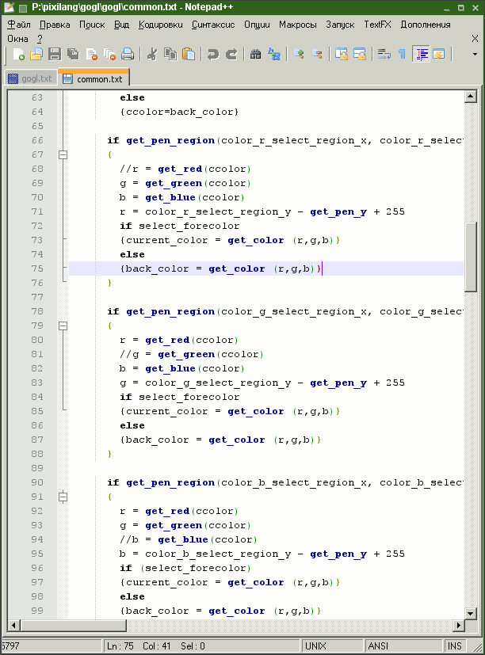
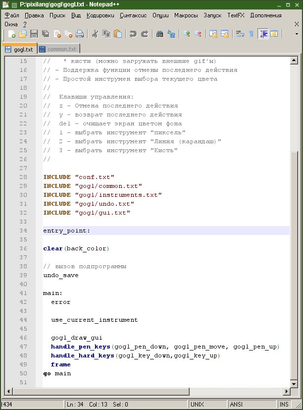
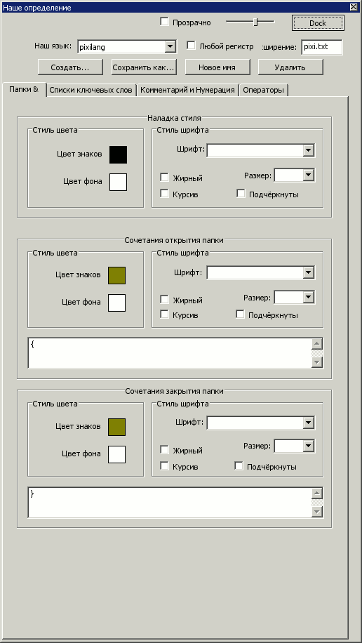
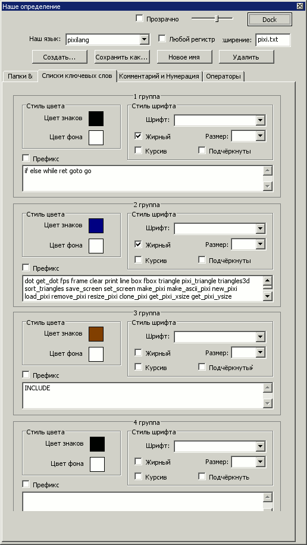
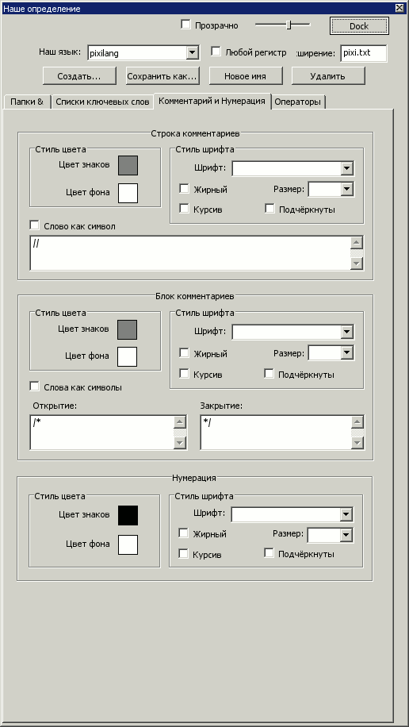
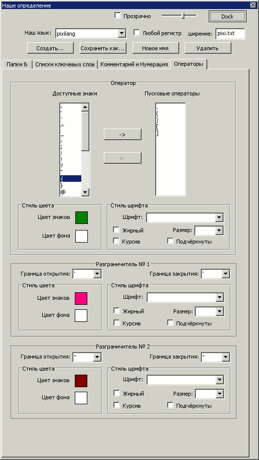

Pixilang - это такой пиксель-ориентированный язык программирования.
Попросили сделать файл подсветки для Notepad++. На вскидку полноценную подсветку показалось делать слишком сложно.
Но в Notepad++ есть возможность быстрого создания подсветки через специальный инструментарий.
Получилось не так хорошо, как для Kate. Но всеже лучше, чем ничего.
Чтобы установить файл подсветки нужно скопировать userDefineLang.xml в папку с установленным Notepad++ или куда-то в %APPLICATIONDATA%, если вы при установке использовали этот пункт.
Обратите внимание, что если вы ранее сами делали свои языки разметки, то у вас уже будет существовать файл userDefineLang.xml.
Чтобы не потерять свои настройки сохраните свой файл в надежном месте. (Думаю файлы можно объединить).
Скачать файл подсветки для Notepad++
Скриншоты:


На всякий случай скринкаст по настройке Notepad++:



